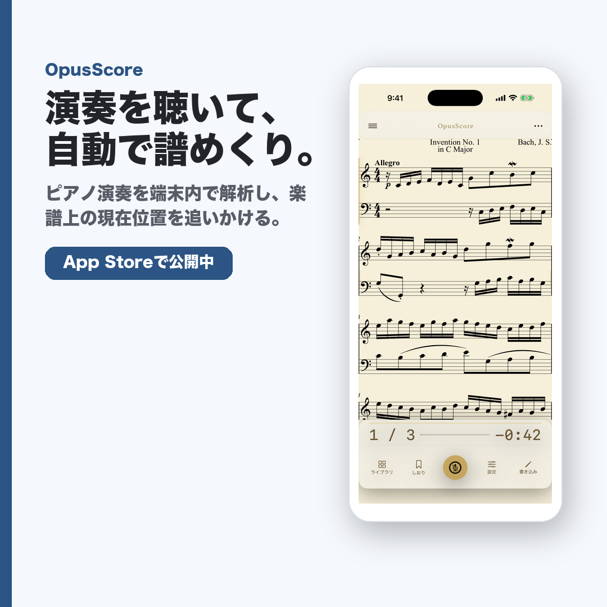
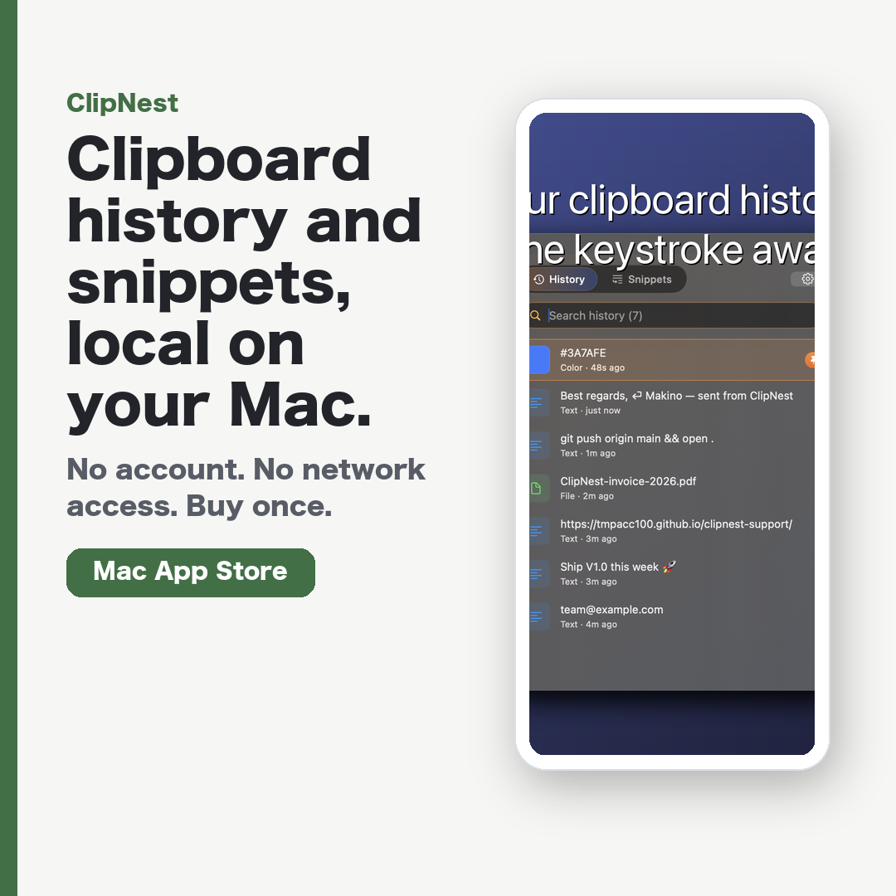

えらんでタイパ
時間デザイン / iOS / LP公開中
効率タイムとじっくりタイムを自分で選ぶ「禁止しない」時間デザインアプリ。
Press Kit
媒体掲載、SNS紹介、レビュー動画、コミュニティ投稿に使える紹介文、素材、公開リンクをまとめています。


時間デザイン / iOS / LP公開中
効率タイムとじっくりタイムを自分で選ぶ「禁止しない」時間デザインアプリ。
朝ルーティン / iOS / LP公開中
出発までの±ゆとり分とLive Activityで、朝の支度を落ち着かせるルーティンアプリ。
買い物チェック / iOS / LP公開中
チェックリストと任意のAIリサーチガイドで、買い物の失敗を減らす台帳アプリ。
音楽練習 / iOS / iPadOS / Store公開中
ピアノ演奏を端末内で解析し、楽譜上の現在位置を追いかけるiPhone/iPadアプリ。
Macユーティリティ / macOS / Store公開中
Macのクリップボード履歴とスニペット展開を1つに。ネットワーク権限なし、買い切り、ローカルファーストなmacOSユーティリティ。
読書 / iOS / iPadOS / macOS / LP公開中
青空文庫の名作を、美しい縦書きとルビで読めるiPhone/iPad/Mac読書アプリ。
日本語学習 / iOS / Android / Web / Store公開中
Indonesian speakers向けのオフライン日本語学習アプリ。語彙、模擬試験、面接練習に対応。
Email: asd95179517@gmail.com
掲載時は各Press Kitページの素材URLと配布リンクを利用できます。